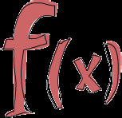
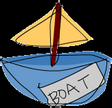

Introduction - Learn You a Haskell for Great Good!
http://learnyouahaskell.com/introduction
Table of contents
Starting Out
Introduction
About this tutorial
Welcome to Learn You a Haskell for Great Good! If you're reading this, chances are you want to learn Haskell. Well, you've
come to the right place, but let's talk about this tutorial a bit first.
I decided to write this because I wanted to solidify my own knowledge of Haskell and because I thought I could help people new
to Haskell learn it from my perspective. There are quite a few tutorials on Haskell floating around on the internet. When I was
starting out in Haskell, I didn't learn from just one resource. The way I learned it was by reading several different tutorials and
articles because each explained something in a different way than the other did. By going through several resources, I was able
put together the pieces and it all just came falling into place. So this is an attempt at adding another useful resource for learning
Haskell so you have a bigger chance of finding one you like.
This tutorial is aimed at people who have experience in imperative programming
languages (C, C++, Java, Python …) but haven't programmed in a functional language
before (Haskell, ML, OCaml …). Although I bet that even if you don't have any significant
programming experience, a smart person such as yourself will be able to follow along
and learn Haskell.
The channel #haskell on the freenode network is a great place to ask questions if you're
feeling stuck. People there are extremely nice, patient and understanding to newbies.
I failed to learn Haskell approximately 2 times before finally grasping it because it all just seemed too weird to me and I didn't get
it. But then once it just "clicked" and after getting over that initial hurdle, it was pretty much smooth sailing. I guess what I'm trying
to say is: Haskell is great and if you're interested in programming you should really learn it even if it seems weird at first. Learning
Haskell is much like learning to program for the first time — it's fun! It forces you to think differently, which brings us to the next
section …
So what's Haskell?
Haskell is a purely functional programming language. In imperative languages you get things
done by giving the computer a sequence of tasks and then it executes them. While executing them, it
can change state. For instance, you set variable a to 5 and then do some stuff and then set it to
something else. You have control flow structures for doing some action several times. In purely
functional programming you don't tell the computer what to do as such but rather you tell it what stuff
is. The factorial of a number is the product of all the numbers from 1 to that number, the sum of a list
of numbers is the first number plus the sum of all the other numbers, and so on. You express that in
the form of functions. You also can't set a variable to something and then set it to something else later. If you say that a is 5, you
can't say it's something else later because you just said it was 5. What are you, some kind of liar? So in purely functional
languages, a function has no side-effects. The only thing a function can do is calculate something and return it as a result. At
first, this seems kind of limiting but it actually has some very nice consequences: if a function is called twice with the same
1 of 3
01/03/17 09:12

Introduction - Learn You a Haskell for Great Good!
http://learnyouahaskell.com/introduction
parameters, it's guaranteed to return the same result. That's called referential transparency and not only does it allow the
compiler to reason about the program's behavior, but it also allows you to easily deduce (and even prove) that a function is
correct and then build more complex functions by gluing simple functions together.
Haskell is lazy. That means that unless specifically told otherwise, Haskell won't
execute functions and calculate things until it's really forced to show you a result. That
goes well with referential transparency and it allows you to think of programs as a
series of transformations on data. It also allows cool things such as infinite data
structures. Say you have an immutable list of numbers xs = [1,2,3,4,5,6,7,8]
and a function doubleMe which multiplies every element by 2 and then returns a new
list. If we wanted to multiply our list by 8 in an imperative language and did
doubleMe(doubleMe(doubleMe(xs))) , it would probably pass through the list
once and make a copy and then return it. Then it would pass through the list another
two times and return the result. In a lazy language, calling doubleMe on a list without forcing it to show you the result ends up in
the program sort of telling you "Yeah yeah, I'll do it later!". But once you want to see the result, the first doubleMe tells the
second one it wants the result, now! The second one says that to the third one and the third one reluctantly gives back a doubled
1, which is a 2. The second one receives that and gives back 4 to the first one. The first one sees that and tells you the first
element is 8. So it only does one pass through the list and only when you really need it. That way when you want something from
a lazy language you can just take some initial data and efficiently transform and mend it so it resembles what you want at the
end.
Haskell is statically typed. When you compile your program, the compiler knows which piece of
code is a number, which is a string and so on. That means that a lot of possible errors are caught at
compile time. If you try to add together a number and a string, the compiler will whine at you.
Haskell uses a very good type system that has type inference. That means that you don't have to
explicitly label every piece of code with a type because the type system can intelligently figure out a
lot about it. If you say a = 5 + 4 , you don't have to tell Haskell that a is a number, it can figure
that out by itself. Type inference also allows your code to be more general. If a function you make
takes two parameters and adds them together and you don't explicitly state their type, the function will work on any two
parameters that act like numbers.
Haskell is elegant and concise. Because it uses a lot of high level concepts, Haskell programs are usually shorter than their
imperative equivalents. And shorter programs are easier to maintain than longer ones and have less bugs.
Haskell was made by some really smart guys (with PhDs). Work on Haskell began in 1987 when a committee of researchers
got together to design a kick-ass language. In 2003 the Haskell Report was published, which defines a stable version of the
language.
What you need to dive in
A text editor and a Haskell compiler. You probably already have your favorite text editor installed so we won't waste time on that.
For the purposes of this tutorial we'll be using GHC, the most widely used Haskell compiler. The best way to get started is to
download the Haskell Platform, which is basically Haskell with batteries included.
GHC can take a Haskell script (they usually have a .hs extension) and compile it but it also has an interactive mode which allows
you to interactively interact with scripts. Interactively. You can call functions from scripts that you load and the results are
displayed immediately. For learning it's a lot easier and faster than compiling every time you make a change and then running the
2 of 3
01/03/17 09:12
Introduction - Learn You a Haskell for Great Good!
http://learnyouahaskell.com/introduction
program from the prompt. The interactive mode is invoked by typing in ghci at your prompt. If you have defined some functions
in a file called, say, myfunctions.hs , you load up those functions by typing in :l myfunctions and then you can play with
them, provided myfunctions.hs is in the same folder from which ghci was invoked. If you change the .hs script, just run
:l myfunctions again or do :r , which is equivalent because it reloads the current script. The usual workflow for me when
playing around in stuff is defining some functions in a .hs file, loading it up and messing around with them and then changing the
.hs file, loading it up again and so on. This is also what we'll be doing here.
Table of contents
Starting Out
3 of 3
01/03/17 09:12